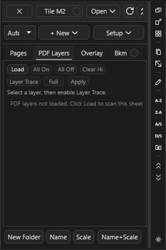

Snap and tracing¶
This page covers the toggles on the bottom strip (Snap, PDF, Ortho, Box), the PDF Layers tab and Layer Trace, wall tracing inside an area, and tracing requests through the AI Inbox (full version only). In everyday measuring an outline is traced with clicks using Ortho and Snap; tracing is needed rarely, when the drawing is vector and there are many walls. How these techniques combine with editing: Editing measurements and snaps.
Snaps on the tool strip¶

Snap, PDF, Ortho, Box. An active toggle is highlighted and applies to all drawing tools and to dragging vertices.| Button | Key | What it does | When to turn it on |
|---|---|---|---|
Snap |
F3 | the cursor catches on points of your own measurements and markup on the sheet: ends and corners (end), segment midpoints (mid), intersections (intersection), Count marks, points of the drawing in progress; radius 14 screen px |
continue a wall exactly from the end of the neighboring one, close an outline at the same vertex, bring two lines together at a corner |
PDF |
Ctrl+F3 | snap to corners and lines of a vector PDF; see the warning | almost never |
Ortho |
F8 | the next point only horizontal or vertical from the previous one; Shift while drawing or dragging turns it on temporarily | rectangular plans, so the line does not drift by a fraction of a degree |
Box |
F9 | Line and Area by two opposite corners instead of point by point; works for Cut, the Area annotation and the Hide mask |
rectangular room, shaft cutout, mask box |
Snaps do not change finished measurements and do not affect quantities: a wall traced with clicks along the centerline without Snap gives the same length. Turn them on for clean geometry and a clean PDF, turn them off when the cursor starts sticking to the wrong things.
How to trace an outline with Snap and Ortho¶
Why: a polyline with clean corners, closed exactly at the starting point. You need: a sheet with a scale.
- Turn on
Ortho(F8) andSnap(F3). - Click
Line(L) orArea(A), give it a name, OK. - Zoom in on the first corner and click.
- Move to the next corner:
Orthoholds the axis. On a skewed run releaseOrthowith one F8 and turn it back on afterwards. - To continue from someone else's end, hover over the end of another line: the
Snaphighlight showsend, click. - Close it: bring the cursor to the first point (
endhighlight) and click; for an Area a click near the first point closes it by itself. Finish with C or a double click.
Result: an outline with no gaps at the corners; Total shows the length or area.
Snap) and F8 (Ortho) run a line from the ends of the neighboring one; F9 (Box) draws a rectangular area with two clicks.Tips
- Shift holds the axis also when dragging a handle or a whole measurement (
Shift = orthoin the status bar). Snapalso works when dragging a vertex: the corner of one wall sticks to the end of another.- An extra point while drawing is removed with Backspace.
How to draw a rectangle with two clicks¶
Why: a rectangular room, shaft or mask box without four clicks. You need: a sheet with a scale.
- Turn on
Box(F9). - Pick
Area,LineorCut. - Click one corner, then the opposite one.
Result: a finished rectangle; for a Line, a closed outline of four sides. The status Cut: box is too small or cancelled: the box has no size means the corners are too close.
Why PDF Snap is almost never used¶
Works unreliably
The owner's words: "PDF snap works very badly, I almost never use it." PDF (Ctrl+F3) catches on corners and lines of the PDF vector and on black lines of a raster; on real plans it sticks to borders, leaders and dimension lines just as readily as to walls, and needs a black-line index for scans. The recipes in this knowledge base do not use it: accuracy comes from Ortho, Box, Snap to your own points, zoom and editing vertices afterwards.
If you do turn it on: the status reads PDF Snap on: current sheet and sheet overlay vector points/lines; Tab cycles the modes for continuing along the drawing (vertices / edge / edges / contour / polyline), Viewport > PDF SNAP > Bridge sets the continuation radius (slider PDF Snap Tab continuation radius, 4-96 screen px, default 36). It is turned off with the same Ctrl+F3.
PDF Layers¶

Load, All On, All Off, Clear Hi, Layer Trace, Full, Apply buttons.The PDF Layers sub-tab in the Pages panel (PDF Layers module, on by default) works with a vector PDF in which the drafter left layers: walls, dimensions, furniture, text. A scan has no layers.
How to hide unneeded drawing layers¶
Why: remove dimensions and furniture so you see only the walls while tracing.
You need: a vector PDF; the PDF layers checkbox on the Display ribbon turned on (by default the sheet is shown as one Static image picture).
- Open the
PDF Layerstab under Pages and clickLoad: layers are read on demand. - Untick the layers you do not need: the sheet redraws right away, status
Layer off: <layer>.All OffandAll Ontoggle all of them. - To find a layer on the sheet, tick
Hion its row: the layer is highlighted;Clear Hiremoves the highlight.
Result: the sheet shows only the layers that are on. The Apply button in this panel belongs to Layer Trace, it is not needed for visibility. Hidden layers also stay out of Crop to Sheet crops: a crop takes the visibility of the source sheet (crops).
Layer Trace¶
Tracing by layer: the app takes the geometry of one PDF layer (for example the walls layer) and turns it into a measurement without clicking it out. Vector PDFs only.
How to take a takeoff from a PDF layer¶
Why: the outline or walls are on a separate layer, and it can be taken as a whole.
You need: layers loaded (Load), a sheet with a scale, an active takeoff of the type the mode produces (table below): Area for Full, Line for Edge and All Edges, Count for Point.
- Make the right takeoff active: select it in Takeoffs and press Space, or create a new one with a tool button.
- Click
Layer Tracein the PDF Layers panel. A trace bar appears above the sheet; its toggle showsLayer Traceinstead ofManual. - Pick the layer: click its row in the list, or hover over the drawing geometry (status
Layer Trace hover: <layer>. Click/Enter locks layer; Tab cycles candidates) and click or press Enter to lock the layer. - Pick the mode: Tab or the button with the mode name (on the bar above the sheet and in the panel) cycles
Full,Edge,Point,All Edges; the status shows the current one. - Hover over the line of the layer you need and click or press Enter (the
Applybutton in the panel does the same): statusLayer Trace added <type> from '<layer>'. - Check the result in the tree and on the sheet: delete extra segments (dimension lines, borders) with the
Selecttool; Ctrl+Z undoes the creation.
| Mode | What it creates |
|---|---|
Full |
one Area: a rectangle around the extents of the whole layer geometry, not along its outline |
Edge |
one Line: the layer segment nearest to the cursor |
Point |
one Count mark at the cursor point |
All Edges |
up to 48 of the longest layer segments, each as a separate Line |
Result: the measurement goes into the active takeoff. If there is no active takeoff of the right type, the app removes what it created with the status No Line takeoff item is active... (or Area, Count). If there is nothing under the cursor: Layer Trace: no PDF layer found under this point.
Layer menu in the PDF Layers list¶
A right-click on a layer row opens a menu with the layer name in the header. The Trace ... to Takeoff items turn on Layer Trace right away, set the mode and create a measurement in the active takeoff; they take the point where the cursor last was on the sheet. So first hover over the line you need, then move the cursor into the list and open the menu.
| Item | What it does |
|---|---|
Use for Layer Trace |
makes the layer the trace layer without hovering over the drawing; with Layer Trace on it is ready to create a measurement right away |
Trace Full Layer to Takeoff |
Full mode: an Area around the layer extents |
Trace Nearest Edge to Takeoff |
Edge mode: the segment at the last cursor point |
Trace Point to Takeoff |
Point mode: a Count mark at the last cursor point |
Trace All Edges to Takeoff |
All Edges mode: up to 48 of the longest segments |
Show Layer / Hide Layer |
turn the layer on or off, like the checkbox in the row |
Highlight Layer / Clear Highlight |
highlight the layer on the sheet or remove the highlight, like the Hi checkbox |
In the full version, with the AI module on, there are two more items at the top, Save Layer Info for AI and Queue AI Request for This Layer: they write the layer details into the AI Inbox (AI in the app).
Trace Walls Inside Area¶
Deterministic wall tracing inside an area that is already drawn: from the PDF vector lines the app builds wall centerlines and puts them into a new Line takeoff. Requires the Advanced Takeoff Tools module (on).
How to take off the walls inside an area¶
Why: dozens of partitions of a unit or a floor in one action, then just a check.
You need: a vector PDF, a sheet with a scale, an Area along the zone outline (a finished 1st works).
- Right-click the area on the sheet or its row in Takeoffs: Trace Walls Inside Area....
- In the
Trace Walls Inside Areadialog setNew Line takeoff(name per the canon, for exampleint 2x4 9.09). - Check
Wall thickness (distance between the two face lines): 3 and 13 inches by default;Ignore walls shorter than1 ft. - On sheets with dark fill on bearing and rated walls, tick
Only solid (dark) filled walls - demising / corridor / rated: the light gray unit partitions are dropped. LeaveDark cutoffatauto. - The
Include perimeter walls on the area edgecheckbox adds lines along the area boundary (off by default: exterior walls are measured separately);Edge offset1 ft sets the width of that zone. - Click Trace. Status
Tracing walls: reading sheet vector/raster lines.... - Check the length against a hand-traced run on at least one segment, delete extra lines, draw the missing ones with
Record.
Result: a Line takeoff with centerlines. Short fragments, text and leaders are filtered out, collinear pieces are joined. If the vector did not work, the status reads PDF lines did not match; trying raster image; the Allow rough image-only trace (may catch text) checkbox allows a rough trace from the image.
Tips
- Without a sheet scale the trace does not start:
Set the sheet scale first: wall thickness is measured in real inches. - The trace does not tell ext from int and does not know the height: sorting into takeoffs stays with the estimator.
- Where walls are drawn with a single line and no fill, the fill filter turns itself off; check the result more carefully.
Tracing requests through the AI Inbox¶
Full version only: Lite has no AI module, while Layer Trace and Trace Walls Inside Area above do work. With the AI module on, the sheet context menu has the items Trace wall from this point, Trace closed area and Check missed takeoffs on this page. They do not draw right away: they create an AI Inbox entry with the text Pending SmartTrace request or Pending SmartCheck request, which is then run and checked through AI Manager or the AI terminal (AI console, AI Manager). The result reaches the tree only after confirmation.
Traps¶
Snapon a dense drawing catches on a neighboring measurement or markup: turn off F3 or zoom in.Orthogets in the way on plans with diagonal walls: hold Shift only on the run that needs it.Boxstays on for all tools: after a rectangle turn off F9, otherwise the next polyline closes after the second click.PDFis silent on a scan without a black-line index; on a vector it catches on borders as readily as on walls.- Layer Trace and Trace Walls give candidates, not a finished measurement: check the total length against a hand trace.
See also¶
- Editing measurements and snaps: selection, vertices, recipes
- Merge, Split, Break, Ends, Combine, Similar
- Measuring tools, Sheets (Pages)
- Extra features, Ideas and plans: AI Auto Trace